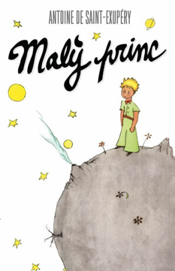
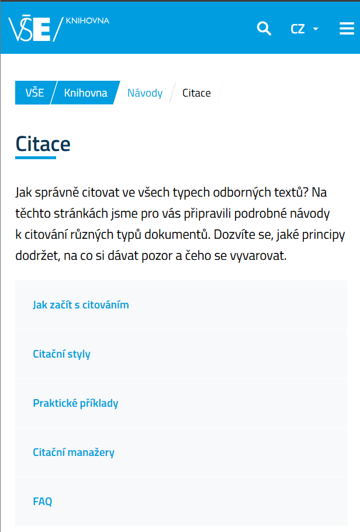

Chráněná díla
Autorské dílo je originální výtvor – například text, obrázek, fotografie, hudba, video, ale také počítačový program. Každý autor má právo rozhodovat o tom, jak bude jeho dílo použito.
Co je plagiátorství?
Plagiátorství znamená převzít cizí práci nebo myšlenku bez uvedení autora nebo zdroje a vydávat ji za vlastní. Jde o porušení autorského zákona i etických pravidel.
Jak správně citovat?
Citujeme vždy, když do své práce vkládáme jakýkoli cizí obsah – ať už text, obrázek, tabulku nebo myšlenku. Výjimkou jsou pouze všeobecně známé informace nebo vlastní myšlenky.
Co musí obsahovat jednotlivé druhy citací?
-
Citace knihy: autor, název knihy, vydání (pokud je uvedeno), nakladatelství, rok vydání, ISBN
Příklad: DE SAINT-EXUPÉRY, Antoine. Malý princ. 1400, 2023. ISBN 978-80-277-2179-5.
 -
Citace webové stránky: autor nebo instituce, název stránky, datum vydání/aktualizace (pokud je znám), URL, datum citace
Příklad: VYSOKÁ ŠKOLA EKONOMICKÁ V PRAZE. Citace. Online. 2025, 11.3. Dostupné z: https://knihovna.vse.cz/citace/. [cit. 2025-06-24].

Citační manažery
Pro automatizaci citací můžeš použít online nástroje jako citace.com, ale vždy je potřeba citace ověřit, protože i tyto nástroje mohou chybovat.